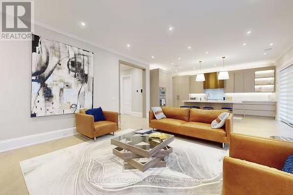

18 Burnhamthorpe Park Boulevard


Price: $2,499,000
Address: 18 Burnhamthorpe Park Boulevard, Toronto
Size: 3500 - 5000 sqft
Rooms: 4 bds, 5 bths
Description: Experience unrivaled luxury in this custom-built, 4-bedroom detached residence, commanding a prime position on a treelined street across from the prestigious Islington Golf Course. With over 5,000 sq. ft. of sublime living space, this home redefines sophistication. Soaring 10' ceilings on the ground floor and 9' on the second. Step inside to an exceptional open-concept layout anchored by a chef-inspired, family-sized kitchen featuring a massive central island and bespoke cabinetry. Adorned with gorgeous hardwood flooring throughout and multiple cozy fireplaces, every detail speaks of quality. Entertain effortlessly in the lower level, boasting a large recreation room with a walk-out and a dedicated wine cellar.This is more than a home-it's a curated lifestyle brimming with luxury finishes.Simply a must-see for the discerning buyer.